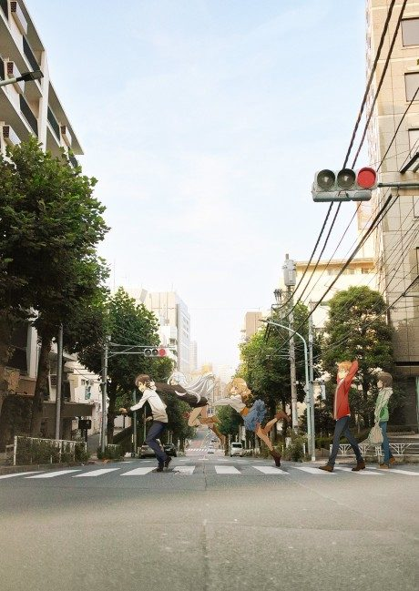
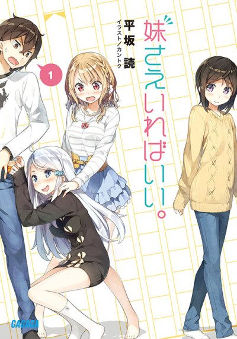

A Sister's All You Need.
妹さえいればいい。
Itsuki, a light novel writer obsessed with little sisters, works and lives among a group of fellow writers and friends in the publishing business.
After the anime, read the light novel from Volume 4.
7.0AniList score
—Animeter, no votes yet
12episodes
Rate it or report where you stopped
Anime finished. Where does the story go next?
Start at Volume4
The anime covers the first three light novel volumes, so start at volume 4. The light novel is finished at 14 volumes.
1314 end
Season 1Start reading here
More like A Sister's All You Need.
 Done7.9
Done7.9
 Manga Ch. 868.0
Manga Ch. 868.0
 Unclear6.2
Unclear6.2
 Unclear8.3
Unclear8.3
 Manga Ch. 718.3
Manga Ch. 718.3
 Manga Ch. 298.1
Manga Ch. 298.1
 Manga Vol. 77.8
Manga Vol. 77.8
 VN7.7
VN7.7
 Done7.4
Done7.4
 Manga Ch. 427.7
Manga Ch. 427.7
 Unclear7.8
Unclear7.8
 Manga Ch. 827.4
Manga Ch. 827.4